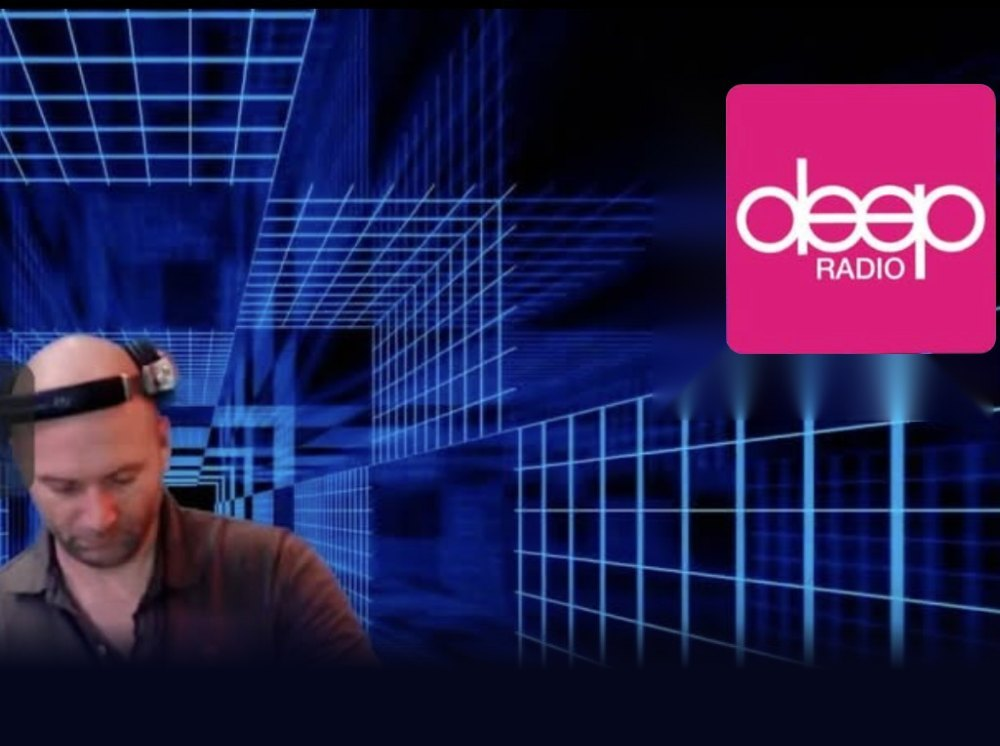
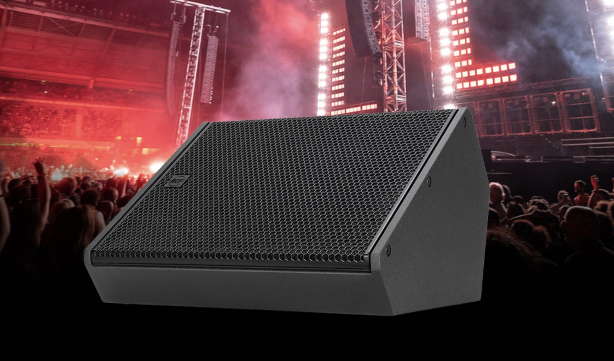
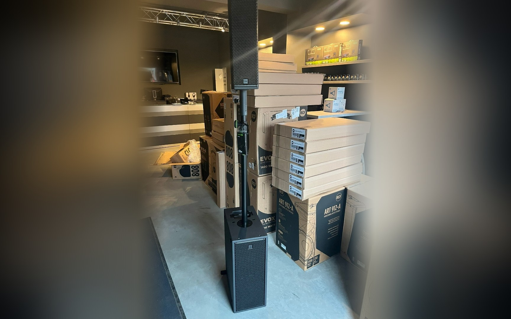
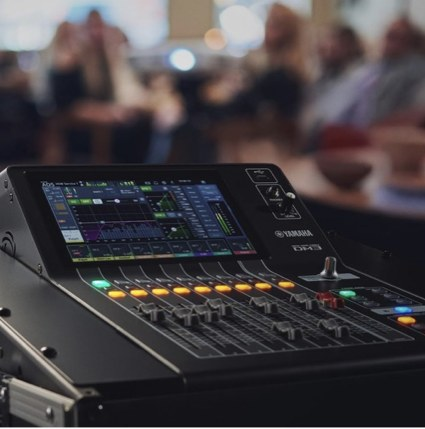

Recent nieuws en achtergronden
 Lees het bericht→
Lees het bericht→ Events
EventsMelandru speelt ‘Raw Drums’ in dramatisch rood

Lees het bericht→EventsMuzikale reis van 2 uur op Deep Radio

Lees het bericht→ProductnieuwsNieuw in de booth: RCF KXM 25-A floormonitor

Lees het bericht→ProductnieuwsNieuw in huis: twee sets RCF SUB 808-AS met KX 515-A

Lees het bericht→Backstage stories